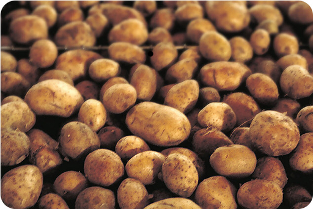
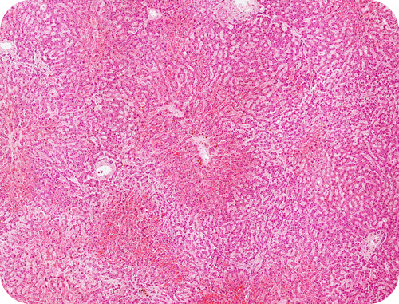
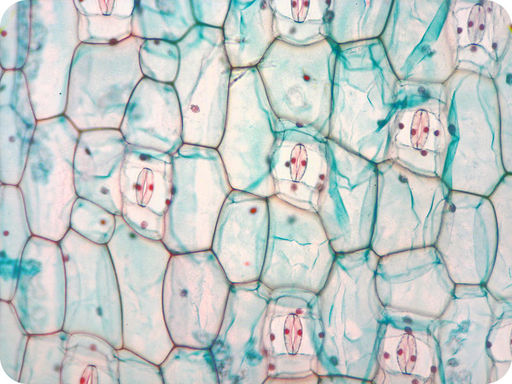
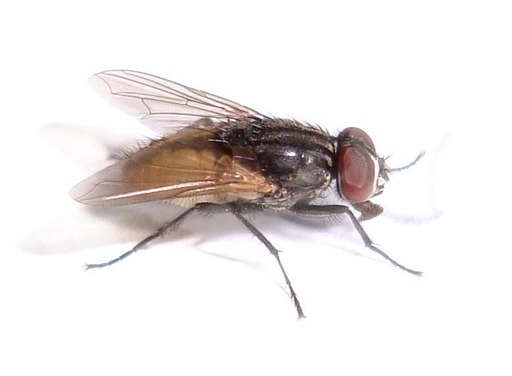

| Name | Function | Example |
|---|---|---|
| Starch | Used by plants to store energy. |
A potato stores starch in underground tubers.  |
| Glycogen | Used by animals to store energy. |
A human being stores glycogen in liver cells.  |
| Cellulose | Used by plants to form rigid walls around cells. |
Plants use cellulose for their cell walls.  |
| Chitin | Used by some animals to form an external skeleton. |
A housefly uses chitin for its exoskeleton.  |